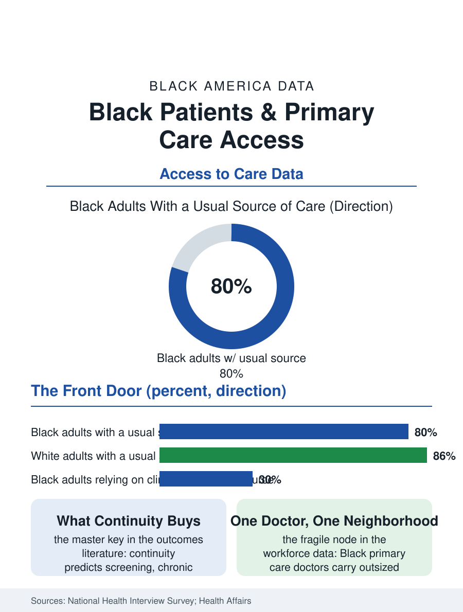

Black Public Health
The Front Door: Black Patients and Primary Care
A usual source of care predicts nearly everything else in the health files, and Black adults hold it less often, in clinics rather than offices. The primary care file.

Having a usual source of care, a doctor or clinic who knows you, is the closest thing American health data have to a master key: it predicts screening, control of chronic disease, and survival across the files of this atlas. Black adults report a usual source of care at rates below white adults, and the place they name when they have one differs, the clinic and the emergency department standing in for the private doctor's office at elevated rates. This article reads the primary care file, the system's front door and its most consequential shortage.
The Missing Medical Home
The national health interview data put the gap in concrete terms: a meaningful share of Black adults, larger than the white share, report no usual place for care other than the emergency room, and among those with a usual source, the site is more often a clinic, health center, or hospital outpatient department than a physician's office. Each word of that finding carries consequences the outcomes literature prices. The clinic is likelier to rotate providers, so the relationship that makes primary care work, the accumulated knowledge of a patient's baselines and habits, builds slowly or not at all; the appointment supply is thinner, the wait for the third available slot longer; and the referral, when it comes, travels through the public system's queues. Behind the pattern stand the file's structural facts: the physician workforce's geography, private practices sited by the insurance mix of neighborhoods; the Medicaid participation decisions that lead practices in Black neighborhoods to close their panels; and the federally qualified health centers, the system's deliberate counterweight, which serve a disproportionate share of Black patients with a fraction of the resources per patient that private primary care commands, and still post, in the comparative studies, quality metrics that shame their funding. The physician pipeline completes the picture: Black physicians are roughly five percent of the profession, concentrated in primary care at higher rates than their peers, and carrying panels with outsized Black patient shares, so that the retirement or departure of a single Black primary care doctor can destabilize a neighborhood's entire care map.
What Continuity Buys
The outcomes attached to continuity are not soft. The longitudinal studies associate a continuous primary care relationship with lower total mortality, fewer hospitalizations for the ambulatory-sensitive conditions, heart failure, diabetes complications, asthma, that fill this atlas's hospital files, better cancer screening completion, and lower total spending, a combination so favorable that health economists treat primary care supply as infrastructure. The mechanisms are mundane and cumulative: the blood pressure actually trended, the screening actually ordered because the chart remembered, the symptom mentioned early because the patient trusted the listener, the medication reconciled across the specialists. For Black patients the continuity dividend intersects the trust file directly: the research on racial concordance finds Black patients with Black physicians receiving more preventive services and reporting the communication quality that makes the services acceptable, while the supply arithmetic makes concordance a rationed good. The system's substitutes, the urgent care center, the retail clinic, the telehealth visit of the previous file, handle episodes efficiently and continuity not at all, and their growth in Black neighborhoods, while genuinely convenient, risks formalizing the two-tier structure: episodic care for some, a doctor who knows you for others, the difference compounding silently across the decades of a chronic disease.
Rebuilding the Front Door
The repair file is unusually well specified. Payment reform that funds primary care as capitation rather than piecework underlies the models, the patient-centered medical homes and accountable care organizations whose evaluations show their largest gains in exactly the high-need populations this file tracks, because a system paid for health rather than visits finally profits from the prevention it always preached. The workforce repairs are the pipeline repairs of the health professions files, with primary care's version sharpened by the debt arithmetic: the specialty pays least among physician fields, so the debt-driven sorting of medical graduates taxes it hardest, and the loan repayment programs tied to shortage-area service are chronically oversubscribed. Community health workers, the lay extension of the primary care team drawn from the neighborhood itself, show in the trial literature some of the strongest returns in the entire prevention file for Black patients with chronic disease, a workforce whose evidence base has outrun its funding by a decade. The primary care file closes at the front desk, where a new patient asks whether the practice is taking patients like her, and the answer, distributed by the maps in this file, decides more of her next thirty years of health data than any single intervention in this atlas. A usual source of care is not a statistic. It is a person who knows your name and your numbers, and the file's whole finding is that America rations that person by race and neighborhood while publishing, in its own journals, the proof of what the rationing costs.
More in Black Public Health
Hypertension Among Black Adults: Prevalence, Control, and Consequences
About 55 percent of Black adults have hypertension — the highest rate of any U.S. group. Prevalence, onset, control, and the stroke, heart, and kidney consequences in the data.
Diabetes Among Black Adults: Prevalence and Complications
Nearly one in five Black adults has diabetes, diagnosed or undiagnosed — and its complications fall with particular weight. The CDC data on prevalence, control, and outcomes.
Black Life Expectancy: The Gap at Birth and Its Causes
Black life expectancy at birth is about 73 years, roughly five years below the national figure — the summary measure of every health gap in this section. The CDC data.
Source: National Center for Health Statistics, National Health Interview Survey; Health Affairs and Annals of Family Medicine continuity studies.